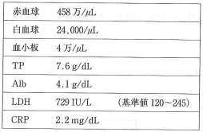
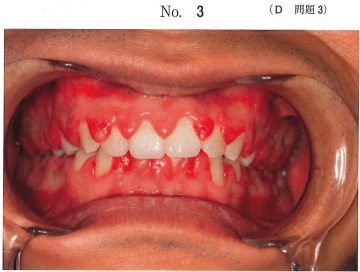

白血病は、造血幹細胞/前駆細胞に遺伝子異常が起こり、異常な白血病細胞が骨髄を占拠して正常造血が障害される疾患である。放射線被曝、ベンゼン、化学療法などが原因となるが、原因不明が圧倒的に多い。
臨床経過から急性白血病と慢性白血病に、細胞系列から骨髄性とリンパ性に分類される。
| 分類 | 略称 | 特徴 |
|---|---|---|
| 急性骨髄性白血病 | AML | FAB分類でM0〜M7。成人に多い |
| 急性リンパ性白血病 | ALL | FAB分類でL1〜L3。小児に多い |
| 慢性骨髄性白血病 | CML | Ph染色体陽性。慢性期→急性転化 |
| 慢性リンパ性白血病 | CLL | 欧米に多い。日本では稀 |
白血病細胞が骨髄を占拠し正常造血が障害されることで、以下の3大症状が現れる。
| 障害される血球 | 症状 |
|---|---|
| 赤血球減少（貧血） | 倦怠感、顔面蒼白、息切れ |
| 白血球減少（免疫低下） | 発熱、易感染性 |
| 血小板減少 | 歯肉出血、紫斑、鼻出血 |
急性白血病の初発時症状として、発熱・倦怠感・歯肉出血・顔面蒼白が重要（103A103）
急性白血病、特に急性単球性白血病（M5）では白血病細胞の歯肉浸潤により歯肉の腫脹がみられる。これは歯垢による歯肉炎とは異なり、全顎にわたるびまん性の腫脹を呈する。
歯肉出血の原因は血小板減少であり、播種性血管内凝固症（DIC）の合併によりさらに増悪する。
AMLの中でもAPL（M3）は特に重要である。高頻度にDICを合併し、出血傾向が顕著となる。肝脾腫、歯肉や皮膚への浸潤も認められる。
CML症例の95%以上にPh（フィラデルフィア）染色体 t(9;22)が認められる。9番染色体上のABL遺伝子と22番染色体上のBCR遺伝子が融合し、BCR-ABLキメラ分子を形成する。
分子標的薬であるイマチニブ（BCR-ABL阻害薬）が第一選択。5年生存率90%程度。イマチニブ耐性例には第2世代のダサチニブ、ニロチニブが用いられる。
白血病を疑った場合に追加すべき検査は白血球分画である。末梢血中に未分化な芽球が出現しているか確認する。
造血幹細胞移植（骨髄移植）を予定している患者では、移植前に感染病巣の除去を行うことが重要である。移植後は免疫抑制状態となるため、口腔内の感染源が全身感染の原因となりうる。
MDSは造血幹/前駆細胞に起こった遺伝子異常に起因し、一部はAMLに移行する前白血病状態である。原因不明の発症が大半で、形態異常を伴う無効造血を特徴とする。
予後評価には国際予後スコアリングシステム（IPSS）が用いられる。
急性白血病の初発時症状はどれか。すべて選べ。
【解説】急性白血病では正常造血が障害され、赤血球減少による倦怠感・顔面蒼白（貧血症状）、白血球減少による発熱（感染）、血小板減少による歯肉出血が初発症状として現れる。徐脈は白血病の症状ではない。
32歳の男性。歯肉の腫脹と出血を主訴として来院した。数日前から微熱と倦怠感を自覚しているという。初診時の口腔内写真（別冊No.3）を別に示す。血液検査結果を表に示す。
追加すべき検査項目はどれか。1つ選べ。


【解説】歯肉腫脹・出血＋微熱＋倦怠感 → 白血病を疑う所見。白血病の診断には白血球分画で芽球の出現を確認することが重要。PSAは前立腺癌、CEAは消化器癌、SCC抗原は扁平上皮癌、Bence Jones蛋白は多発性骨髄腫の腫瘍マーカーである。
骨髄移植直前の小児に対して歯科治療を行う目的はどれか。1つ選べ。
【解説】骨髄移植前は前処置として大量化学療法や全身放射線照射を行うため、移植後は高度の免疫抑制状態となる。口腔内の感染源が致命的な全身感染の原因となりうるため、移植前に感染病巣の除去を行う。